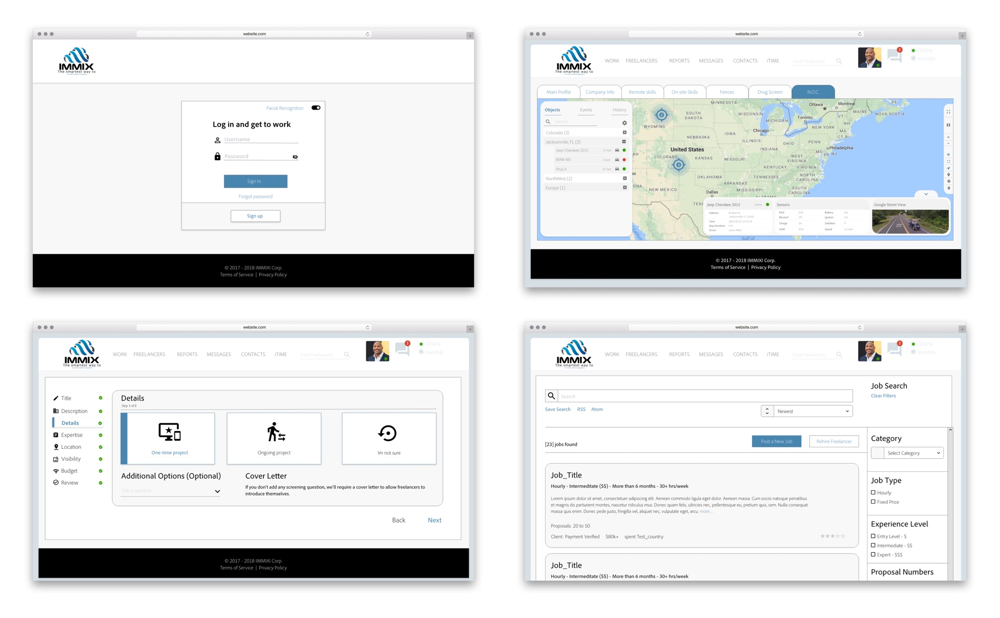
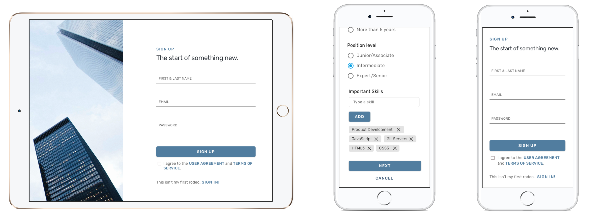
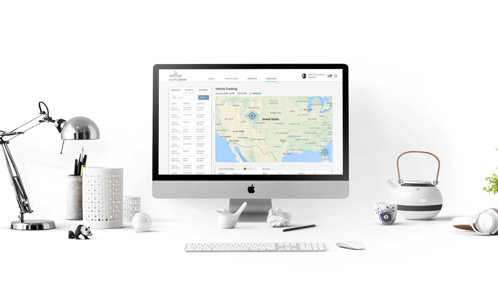

To start, let me just say, UX auditting is one of my favorite
things. Not that I love to savagely comb through below par
interfaces, but UX audits are an opportunity to teach the
client and even business partners proper usability and
accessibilty standards as well as conveying the importance of
UX to them. Typically in these instances, if an audit is all
that is asked, I'll deliver a set (small or large depending on
the project) of design comps and a written copy of all
interface modifications made and why.
Flight2Landing was an interesting project. I came into as the
Lead UX Designer mid-way. I wasn't involved in the initial
architecture, the market matrix comps, the style guide - or
the lack there of.
This posed as a pretty imediate issue. After trying to salvage
what had already been mocked and iteratively developed, a
complete overhaul was the ultimate solution. This included
backtracking to meet proper UX navigability, A11Y accessible
practices, data visualization, brand change and a concrete
style guide.
We also had a pretty steady in-and-out of interns and workers.
This made for inconsistent workflows and, again, a timely
detail. Alas, here we go.
I call this period 'The Mud' because that is what it felt like
to trudge through the mess of the current architecture and
turn around to explain to the stakeholders why these worked.
But, they didn't. This ultimately caught us in a bind and it
was time to time-travel beyond the last few months of work.
This costs money, time and business support. This is one of
the many reasons why proper UX design is important. Emphasis
on the UX.
 Above are the original designs of the application.
The site re-skin was aimed towards hitting all of the key pain
points listed above and ensuring that the site meets maximum
usability standards through simple and effective user
protoyping. Responsive design like handheld mobile views for
tablets and smartphones were also added to the re-desgin
collection. Initially, we used Adobe XD but eventually shifted
to Sketch and Invision for ideal testing scenerios.
This switch ultimately eased the bridge from design to
development and encourage conversation through out the entire
team.

Beyond the headaches and long hours of the site reconfiguration, there were benefits to walking into a project like this. The users are in a margin in which I fall under, that said, when I came fresh into this project and struggled to use it, I couldn't imagine what an outside user must feel. Hence, user testing. Multiple iterations of prototype testing evolved into the screens you have sen above. And that, my friends, was only the cusp.
